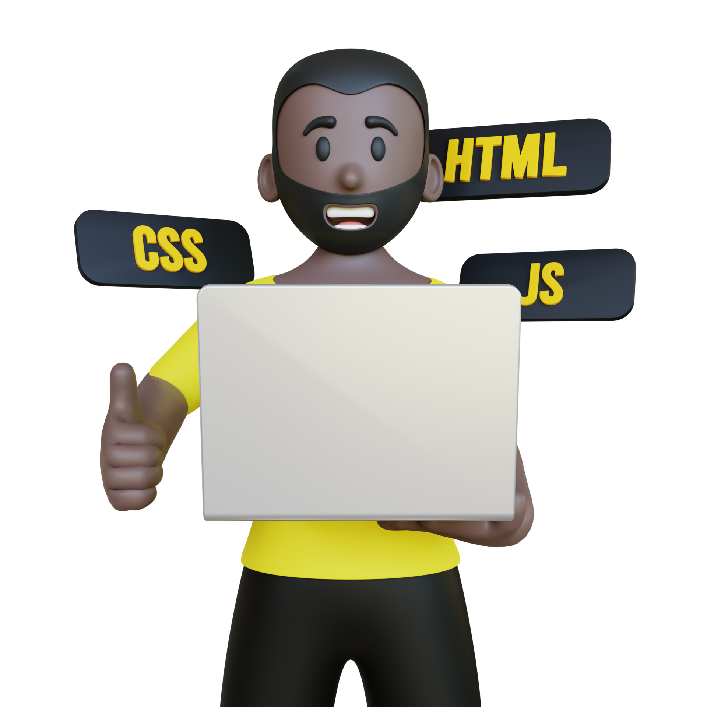

<main class="main">
    <div class="main__container">
        <section class="technology__section">

            <h1 class="technology__title">Junior Frontend helper</h1>
            <p class="technology__text">JFH - это проект , в первую очередь создан для начинающих фронтенд
                разработчиков,
                в нем
                собраны материалы всего что вам нужно для старта (роадмап, технологии, задачи, вопросы
                собеседования...)
                , а так же продвинутые вещи такие как дорога в "faangmula" и более глубокое изучение технологий
            </p>
            <div class="technology__section-inner">
                <p class="technology__section-text"> <span>Что такое Frontend ?</span> Это всё то, что видит
                    пользователь при
                    открытии веб-страницы.Публичная часть приложений (вебсайтов), с которой пользователь может
                    взаимодействовать и контактировать напрямую. Во Frontend входит отображение функциональных
                    задач, пользовательского интерфейса, выполняемые на стороне клиента, а также обработка
                    пользовательских запросов.Frontend-разработка — это работа по созданию публичной части
                    веб-приложения, с которой непосредственно контактирует пользователь. То есть, фронтенд разработчик
                    работает над тем, чтобы на сайте
                    каждая кнопочка, иконка, текст и окно не только стояли на своем месте,
                    выглядели целостно , но и чтобы они выполняли свое прямое предназначение —
                    производили какие-то действие (например, чтобы кнопка “купить” открывала корзину, а “play” —
                    запускала воспроизведение фильма или музыки).</p>
                
            </div>
            <h2 class="technology__content-title title">Базовые технологии фронтенда</h2>
            <p class="technology__content-text">Здесь Вы сможете ознакомиться и изучить 4 основных кита на которых
                держиться сегоня фронетенд</p>

            <div class="technology__item-wrapper">

                <div class="technology__item">
                    <h3 class="technology__item-title">html</h3>
                    
                    <p class="technology__item-text">HTML (от англ. HyperText Markup Language — «язык гипертекстовой
                        разметки») — стандартизированный язык гипертекстовой разметки документов для просмотра
                        веб-страниц в браузере.</p>
                    <a class="technology__item-link" href="#">начать учиться</a>
                    <a class="technology__item-link-read"
                        href="https://developer.mozilla.org/ru/docs/Learn/Getting_started_with_the_web/HTML_basics">узнать
                        больше...</a>
                </div>


                <div class="technology__item">
                    <h3 class="technology__item-title">css</h3>
                    
                    <p class="technology__item-text">CSS (англ. Cascading Style Sheets «каскадные таблицы
                        стилей») — формальный язык декорирования и описания внешнего вида документа (веб-страницы),
                        написанного с использованием html </p>
                    <a class="technology__item-link" href="#">начать учиться</a>
                    <a class="technology__item-link-read"
                        href="https://developer.mozilla.org/ru/docs/Learn/Getting_started_with_the_web/CSS_basics">узнать
                        больше...</a>
                </div>
                <div class="technology__item">
                    <h3 class="technology__item-title">js</h3>
                    
                    <p class="technology__item-text">JavaScript (аббр. JS) — мультипарадигменный язык программирования.
                        Поддерживает объектно-ориентированный, императивный и функциональный стили
                    </p>
                    <a class="technology__item-link" href="#">начать учиться</a>
                    <a class="technology__item-link-read" href="https://learn.javascript.ru/">узнать больше...</a>
                </div>
                <div class="technology__item">
                    <h3 class="technology__item-title">git</h3>
                    
                    <p class="technology__item-text">Git (произносится «гит») — распределённая система управления
                        версиями.Не следует
                        путать с GitHub Не следует путать с GitHub,Проект был создан Линусом Торвальдсом </p>
                    <a class="technology__item-link" href="#">начать учиться</a>
                    <a class="technology__item-link-read" href="https://git-scm.com/book/ru/v2/">узнать
                        больше...</a>
                </div>
            </div>

        </section>
    </div>
</main>